Workspace at Scale
When a workspace grows past a few dozen blocks, the Build view turns into a wall of boxes and lines. It gets hard to see where the data flows, which findings rest on what, and what to check next. Below are four ways to handle that, all on the same big sample workspace. The newest, Focus Map, mixes the Map and Flow ideas, and shows how conflicts get settled and how blocks get retired.
Each one is clickable and works on a phone. Checks you make stay until you reload. Nothing talks to the real core.
Focus Map
The map is where you look around. The lens docked under it is where you work: what this block is built on, the block itself, and what it holds up, like three flow columns. Tap a step in the lens and the map flies there, drawing your trail.
Getting in the zone
- Where to start offers a few goals: settle conflicts, shore up the insight with the weakest ground, or tidy up.
- Zoom into a sub-question and a Go in button appears.
- Going in hides the tool bars, fades every block that is not part of the goal, and shows one quiet line: the goal and a row of dots. Arrow keys walk down and up the chain. Your notes stay private.
- When you finish, your trail stays lit on the map.
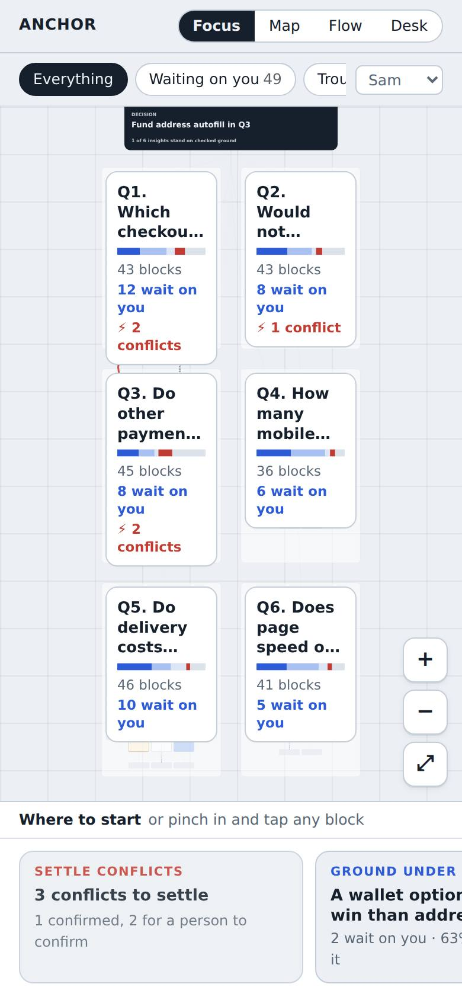
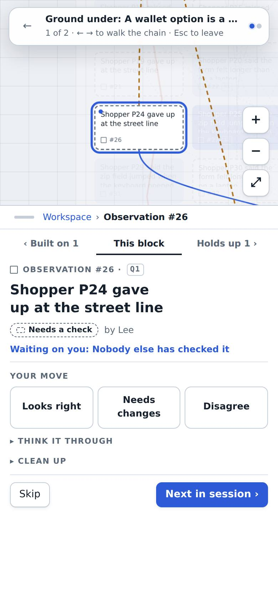
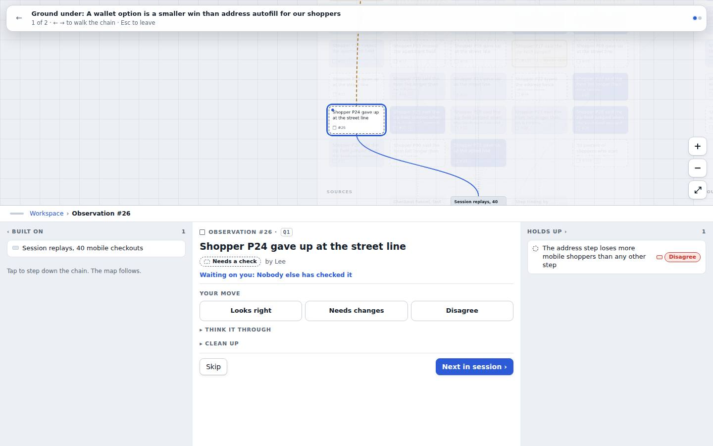
When blocks conflict
There are two kinds of trouble, and the app says which one it is.
- Someone disagrees with one block. The owner picks how to answer: change the wording, add what it rests on, stand by it and ask an SME, or retire it. A new wording moves old checks to history and asks those checkers to look again.
- Two blocks can't both be true. A red zigzag joins them on the map. The conflict check can only suggest one (a dashed "?"). A person confirms it, and until then nothing changes.
Settling a conflict
- See both side by side: what each rests on, how far it is checked, and what it holds up.
- Pick an ending: One holds (the other is retired, and what was built on it can move across), Both hold, each in its own scope (narrow the wording of each), or We can't tell yet (it becomes an open question in the plan, and both stay marked Disagree).
- Say why. Anyone can settle. The owners and everyone who checked either block hear about it, and can reopen it.
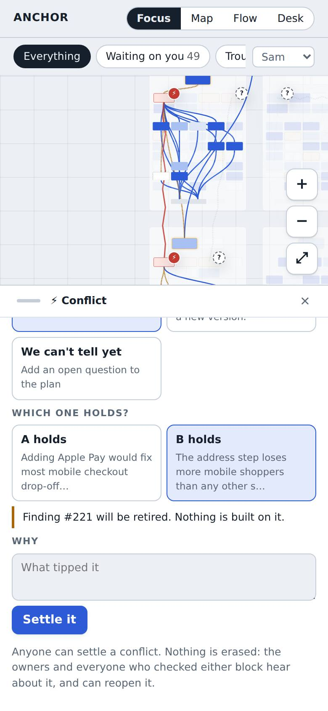
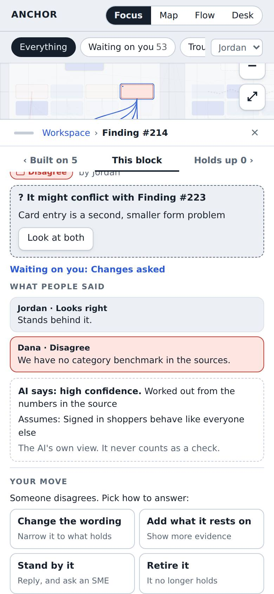
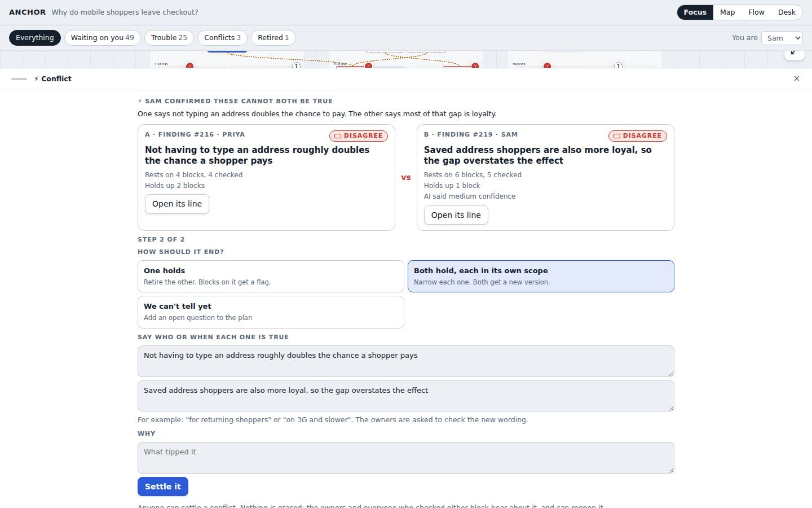
Retiring and cleaning up
Retire is the normal way to clear something out. A retired block leaves the map, keeps its history, and can be brought back. You say why: out of date, out of scope, replaced by another block, same as another block, or wrong.
- Nothing loses its footing quietly. Blocks built on a retired one show "Rests on a retired block". If you named a replacement, one tap moves them onto it.
- Delete is only for your own mistake that nobody else has checked or built on. Everything else can only be retired.
- Tidy up finds what probably doesn't belong: blocks with the same words, AI drafts nobody checked and nothing is built on, and blocks resting on retired ones. Pick several and retire them together, with undo.
- The Retired chip shows retired blocks on the map again, striped.
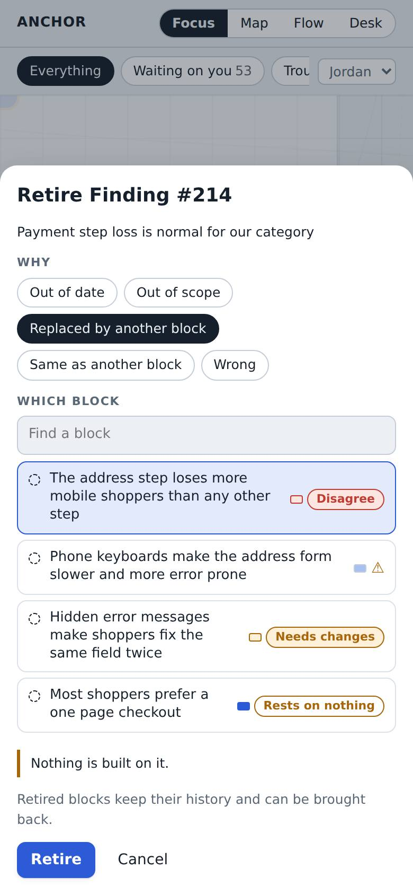
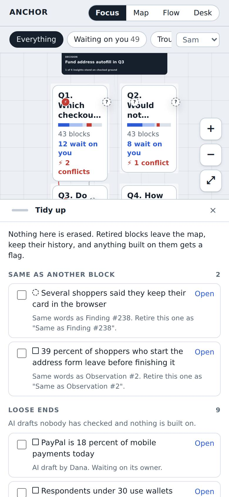
The first three ideas
Zoom Map
The whole workspace is one map you pinch and pan. Far out you see the plan: one district per sub-question, with how far it is checked and how much waits on you. Zoom in and blocks become tiles, then readable cards. Tap a block to light its whole line, from source to decision.
Good at
- Scanning. You see the whole shape and where the trouble is at a glance.
- Seeing the web. Lines across sub-questions are visible.
- "Waiting on you" walks you block to block, flying the map to each one.
Weak spot
- Pinch and pan is work on a small screen. Reading needs a lot of zooming.
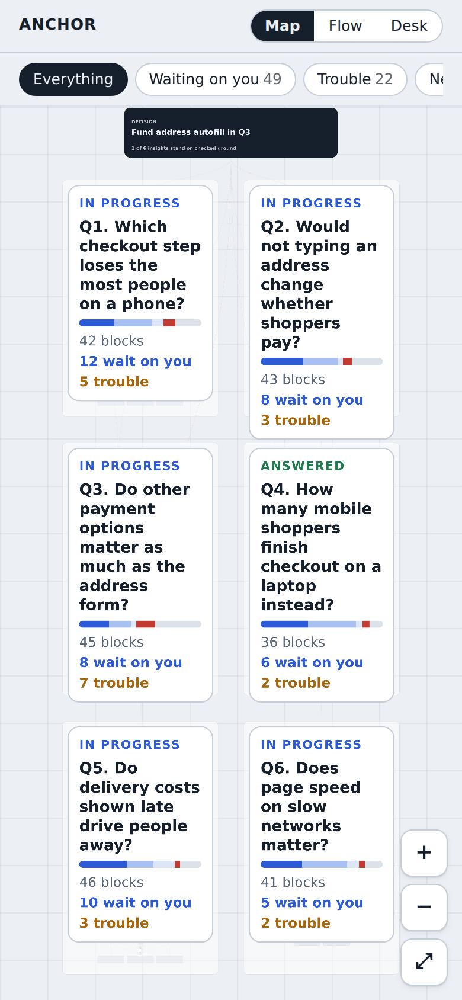
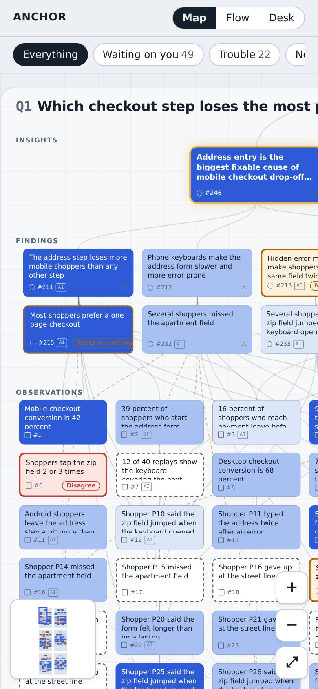
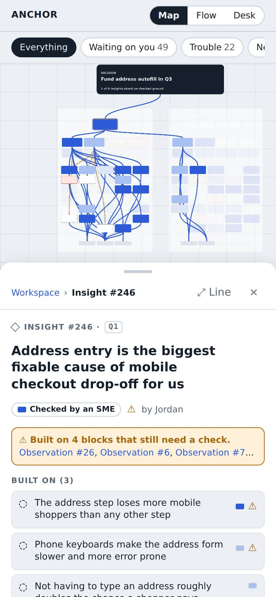
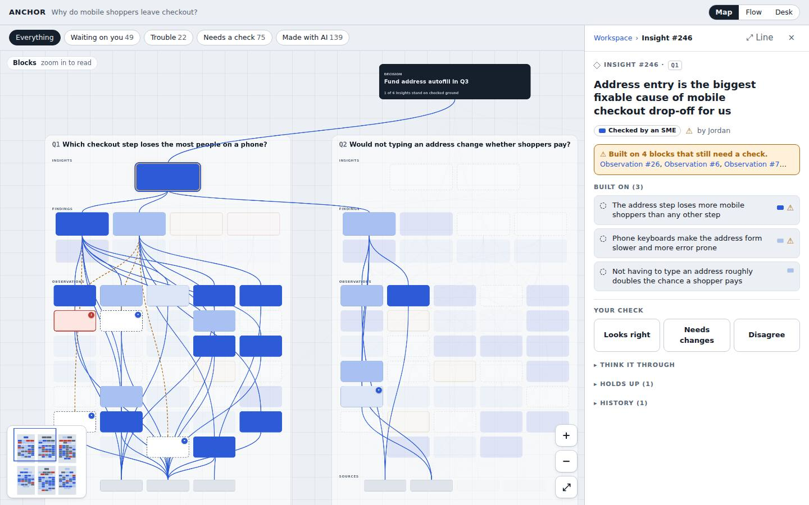
Flow Columns
The data flows left to right: sources, observations, findings, insights, the decision. Pick anything and every column pulls what is linked to it to the top, with the rest folded away. The path bar says what you picked at each level. On a phone the columns are pages you swipe between.
Good at
- Following the data. Source to decision in a few taps.
- Answering "what is this built on" and "what does this hold up" without a map.
- Search works across all 253 blocks.
Weak spot
- You see one chain at a time, not the whole shape.
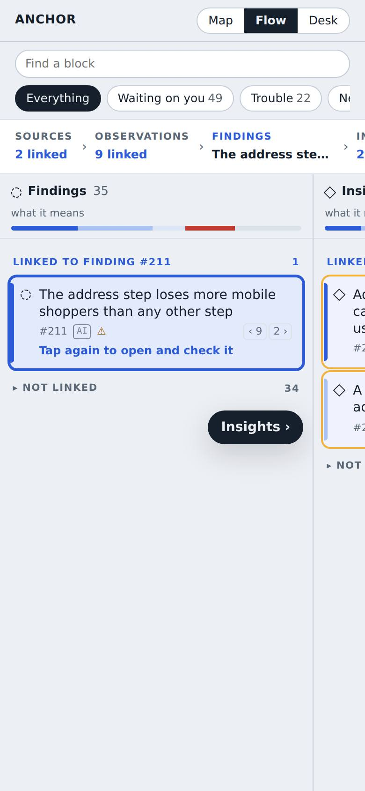
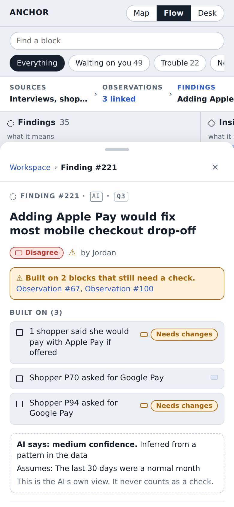
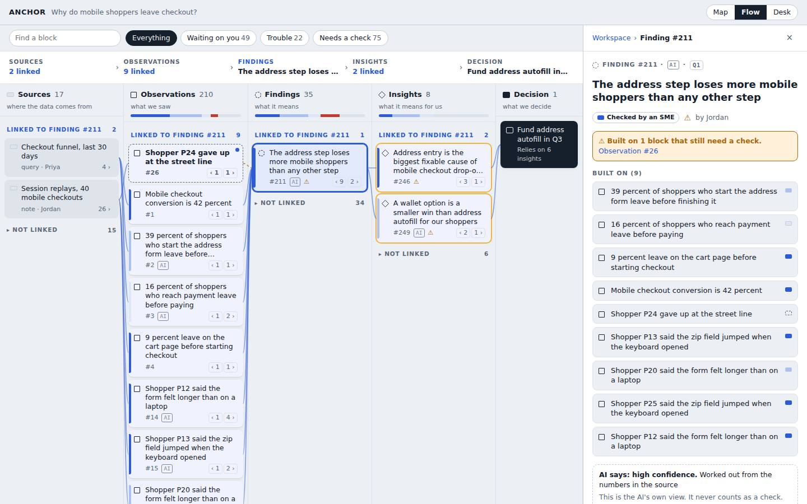
Check Desk
You do not go looking through the web. The desk starts from the decision and shows how solid the ground is under each insight it relies on. Then it hands you the work in small rounds, one block at a time, from the bottom up. Each check shows what it cleared above it. Anything you need to think about longer goes on the Thinking pile with a note.
Good at
- Thought heavy work. One claim, its evidence, and space to think.
- Knowing why a check matters: it ties each block to the decision.
- "Talk it through" puts disagreements side by side.
Weak spot
- Less sense of the whole web. The Outline tab helps, but it is a list.
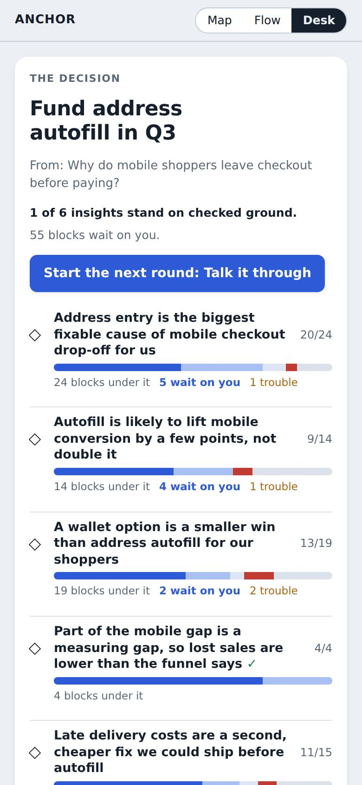
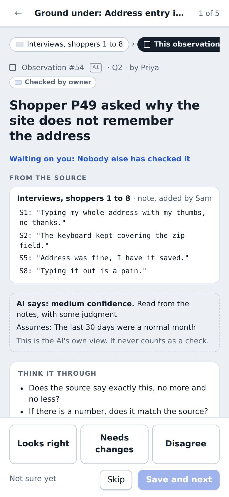
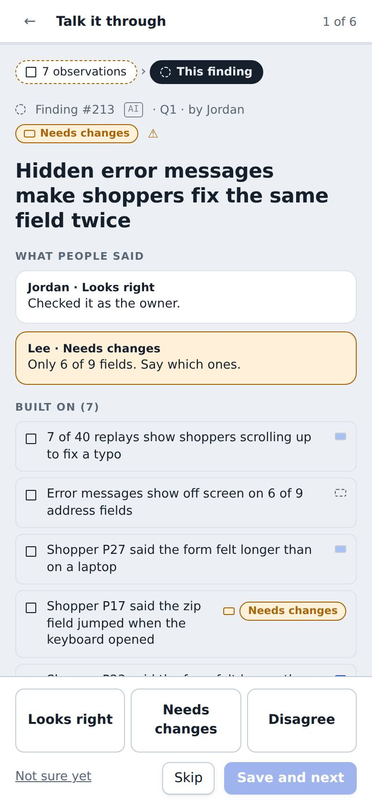
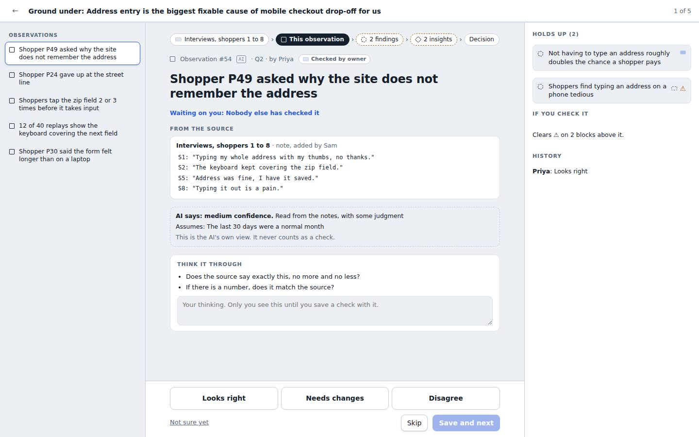
| Zoom Map | Flow Columns | Check Desk | |
|---|---|---|---|
| How you move | Pinch, pan, fly to the next one | Pick, swipe to the next level | Next, next, next |
| Best question | Where is the trouble? | What is this built on? | What should I check, and why? |
| On a phone | Works, takes some zooming | Natural, one column per page | Most natural, one card at a time |
| Sees the whole web | Yes | One chain at a time | Through the decision |
| Room to think | Detail panel | Detail panel | Built in, with a Thinking pile |
They can mix. One way would be the Desk as the place you start, with Flow when you want to follow a chain and the Map when you want to see the whole thing.